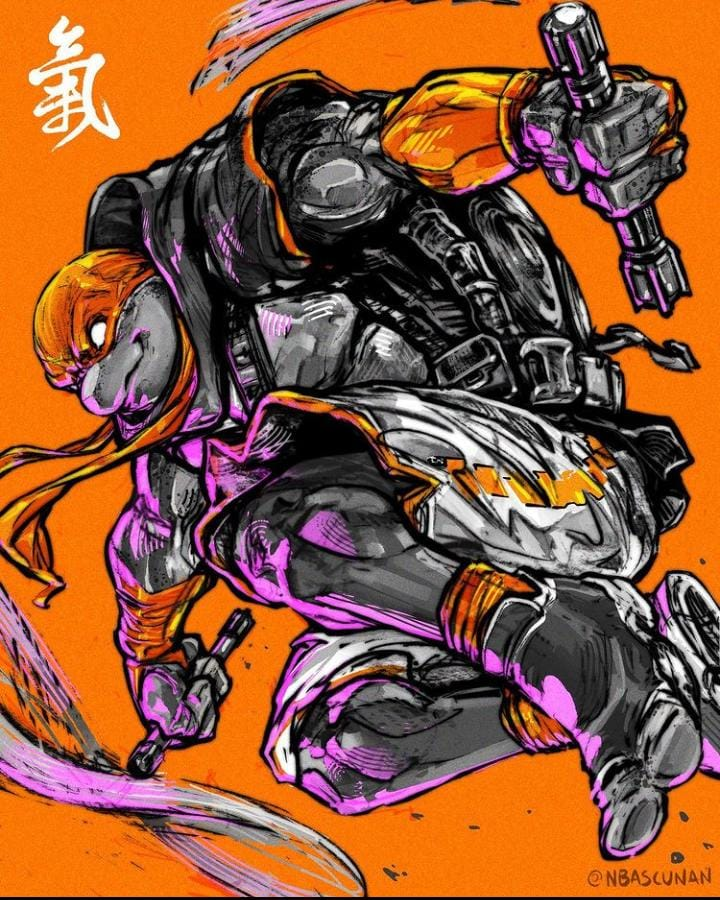

O Doido!
Um brincalhão fácil de lidar e de espírito livre, Michelangelo usa uma máscara laranja e empunha um par de Nunchaku .
Ele é o menos maduro das quatro tartarugas e fornece o alívio cômico, tendo um lado aventureiro juntamente com um amor por pizza.
Ele é um pouco de "surfista" e muitas vezes representado com um sotaque californiano.
Seu nome deriva do pintor renascentista italiano, escultor, arquiteto, poeta e engenheiro, Michelangelo.
Fonte: Wikipedia

nunchaku
O nunchaku é composto de dois bastões de madeira, (ou metal em encarnações modernas) conectados por uma corda ou corrente.
Os nunchakus chineses costumam ser cilíndricos enquanto os japoneses costumam ser octogonais.
O comprimento ideal de cada peça deve ser o tamanho do antebraço do usuário; o osso entre o pulso e o cotovelo.
Tradicionalmente os dois fins são de tamanhos iguais (apesar de existirem nunchakus assimétricos).
O tamanho ideal para conectar a corda/corrente pode ser ajustado para cada indivíduo deixando a corda através do pulso,
com os bastões pendurados confortavelmente apontando para o chão, mas sem mais corda do que é necessário para isso.
O equilíbrio do peso é extremamente importante, nunchakus baratos ou estéticos (como os que acendem no escuro) geralmente
não são bem equilibrados, o que impede o artista de fazer movimentos mais avançados e rápidos em movimentos de 'pegada-baixa', tais como giros ao redor da mão.
O peso deve ser balanceado através das pontas externas dos bastões para uma maior facilidade e controle.
O nunchaku tradicional deve ser feito de madeira forte e flexível, tais como carvalho, loquat ou pasania.
Originalmente, a madeira seria submersa na lama por vários anos, aonde a falta de oxigênio e o bom nível de acidez a impediriam de apodrecer.
O resultado final é uma madeira mais forte. A corda era feita com a crina do cavalo, que alguns dizem ser capaz de bloquear uma espada
(não existe nenhuma evidência conhecida disto). Finalmente, a madeira era pintada e envernizada para manter sua cor.
Existem várias formas alternativas de nunchaku, como o bastão de três secções (sansetsukon) e ou de quatro secções,
que são nunchakus com três e quatro peças conectadas.